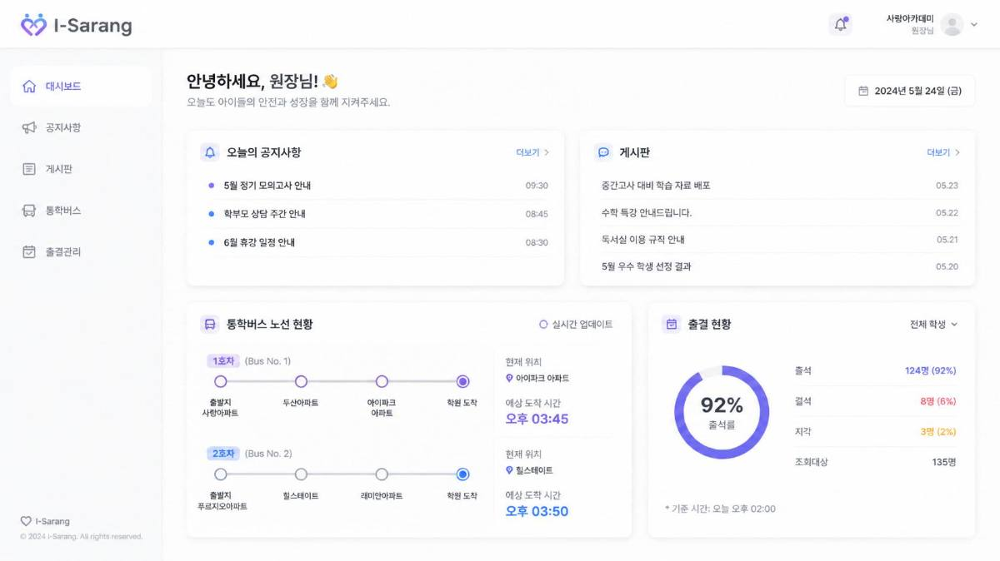

실시간 위치 — 다수 차량 동시 갱신
여러 사업장의 차량이 동시에 짧은 주기로 위치를 전송하는 상황에서, 매 위치 갱신마다 MySQL에 직접 쓰고 조회하면 대시보드 지도 갱신이 느려지고 DB 부하도 커지는 문제가 있었습니다.
해결
- 차량별 최신 위치는 Redis에만 저장해 지도 조회를 즉시 처리
- MySQL에는 운행 이력 조회가 필요한 단위로만 주기적으로 적재해 쓰기 부하를 분리
GPS 기반 실시간 위치 추적과 승하차 알림을 중심으로, 공지사항·알림장·얼굴인식 출석 관리까지 아우르는 통학버스·기관 안전관리 솔루션입니다.
Java · Spring Boot · MySQL · Redis · React

기존 통학버스 운영은 아이가 버스에 잘 탔는지, 정류장에 잘 내렸는지를 학부모가 전화나 수기 확인으로만 알 수 있는 구조였습니다. 실시간으로 확인할 방법이 없다 보니 등하원 시간마다 불안감이 컸고, 이를 해소하기 위해 GPS 위치 추적과, 기사님이 앱으로 직접 체크하는 탑승·하차 알림 기능을 중심으로 아이스쿨 개발을 시작했습니다.
여러 사업장의 다수 차량을 동시에 관제해야 했고, 알림은 이벤트 발생 즉시 학부모에게 전달되어야 한다는 실시간성 요구가 있었습니다.
차량 위치를 실시간으로 지도에 표시
기사님이 앱에서 직접 탑승·하차 체크
승하차·운행 상황을 즉시 푸시 알림
기관 단위 공지를 학부모에게 일괄 전달
교사-학부모 간 개별 알림장 소통 기능
얼굴인식 단말기로 등원 출석을 자동 체크
위치 데이터는 읽기 성능이 중요하고, 승하차 기록은 정합성이 중요해서 저장소를 역할별로 나눴습니다.
여러 사업장의 차량이 동시에 짧은 주기로 위치를 전송하는 상황에서, 매 위치 갱신마다 MySQL에 직접 쓰고 조회하면 대시보드 지도 갱신이 느려지고 DB 부하도 커지는 문제가 있었습니다.
탑승·하차는 기사님이 아이를 직접 눈으로 확인하고 앱에서 체크하는 방식이라, 운행 중 통신이 불안정한 구간에서는 체크 기록이 서버에 바로 전달되지 못하는 경우가 있었습니다.
| 체크 시각 | 정류장 | 수신 시각 |
|---|---|---|
| 15:20:12 | 사랑아파트 | 15:20:13 |
| 15:28:04 | 두산아파트 | 15:37:10재전송 |
| 15:36:41 | 아이파크 아파트 | 15:37:11재전송 |
| 15:46:20 | 학원 도착 | 15:46:21 |